Mọi thao tác ghi dữ liệu trong 7 ngày qua, mới nhất trước: thời điểm, người, thao tác, đối tượng, màn, tóm tắt thay đổi; thao tác nhạy cảm có cờ.
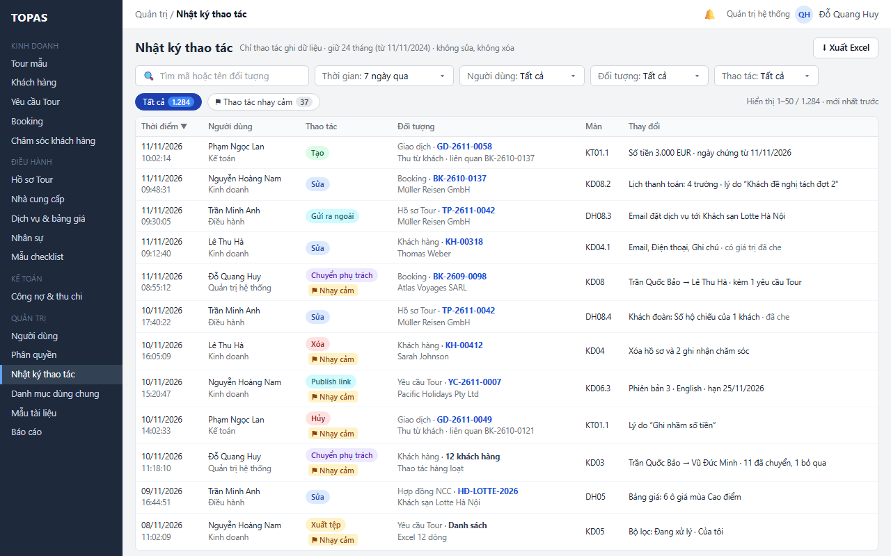
Khoảng chọn nhanh áp dụng ngay và khoảng tùy chọn trong thời gian lưu 24 tháng.
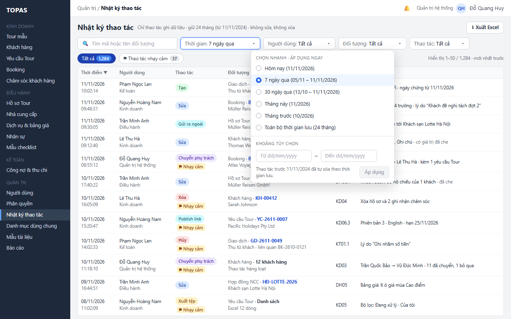
Gom các thao tác của một người trên một loại đối tượng; số trên chip tính theo bộ lọc.
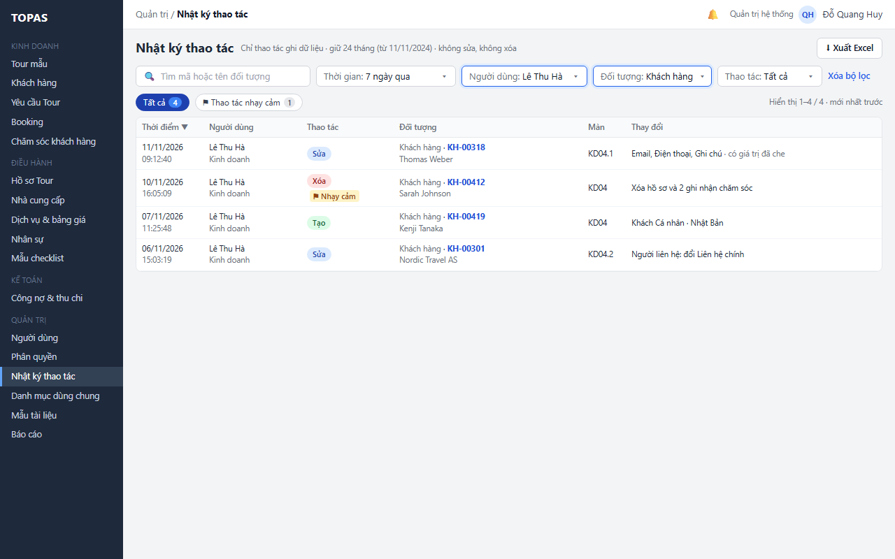
Chip gom các thao tác cần rà soát: xóa, hủy, mở lại, chuyển phụ trách, xuất tệp, publish link, sửa người dùng và phân quyền.
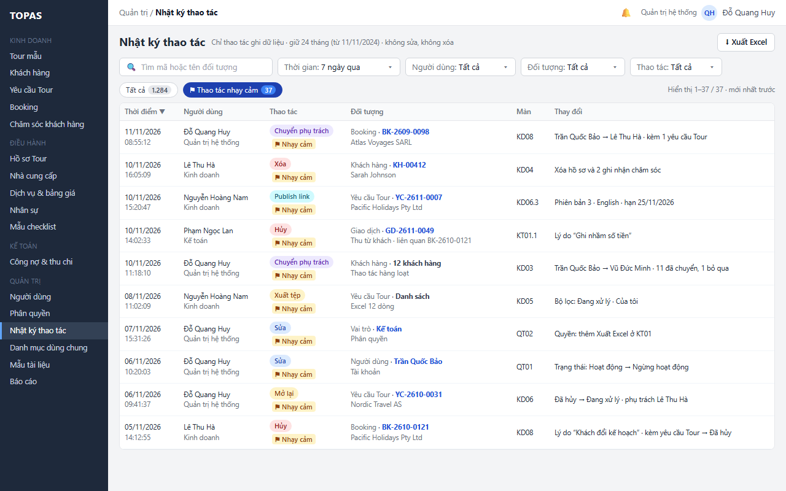
Giá trị trước và sau của từng trường, lý do người dùng nhập, tác động kèm theo; mở đúng bản ghi hoặc xem mọi thao tác trên bản ghi.
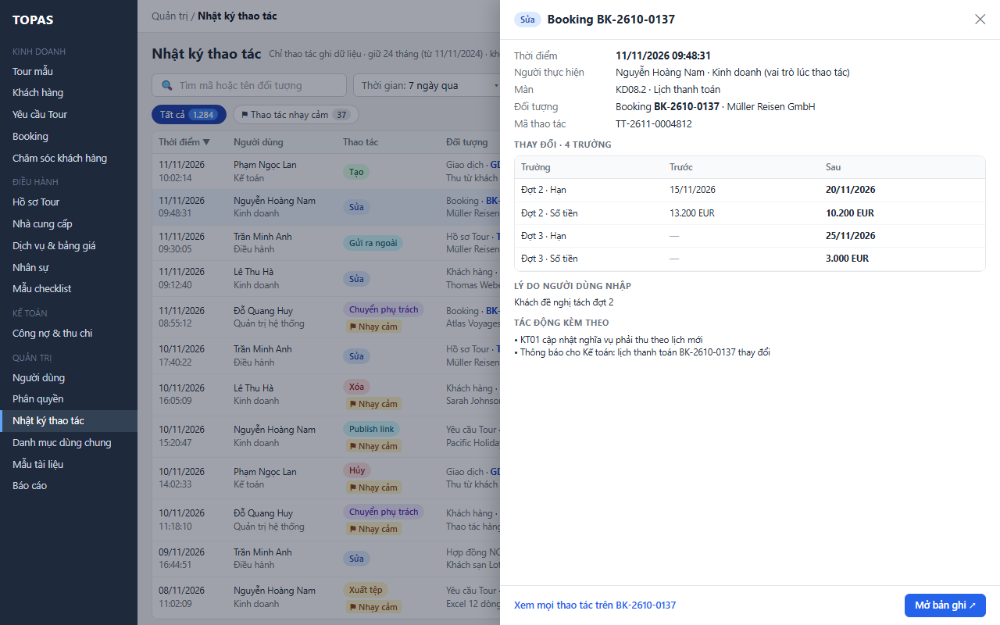
Trường nhạy cảm của khách hiện ở dạng đã che cả trước và sau; trường khác hiện đầy đủ.
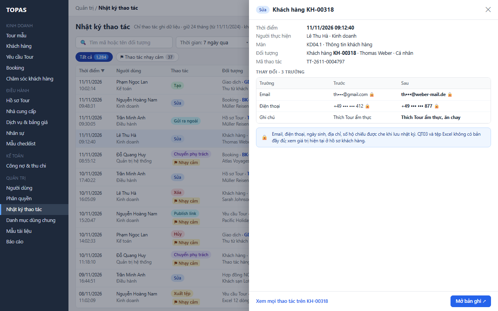
Dữ liệu trước khi xóa còn giữ được; giá trị cá nhân đã bỏ; nút Mở bản ghi khóa kèm lý do.
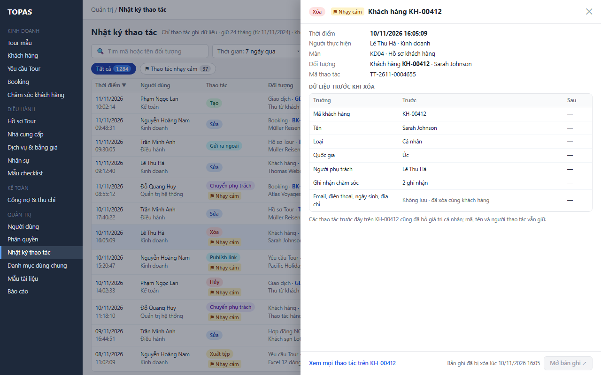
Mọi thao tác trên một Booking và các thao tác liên quan (giao dịch thu) trong toàn bộ thời gian lưu.
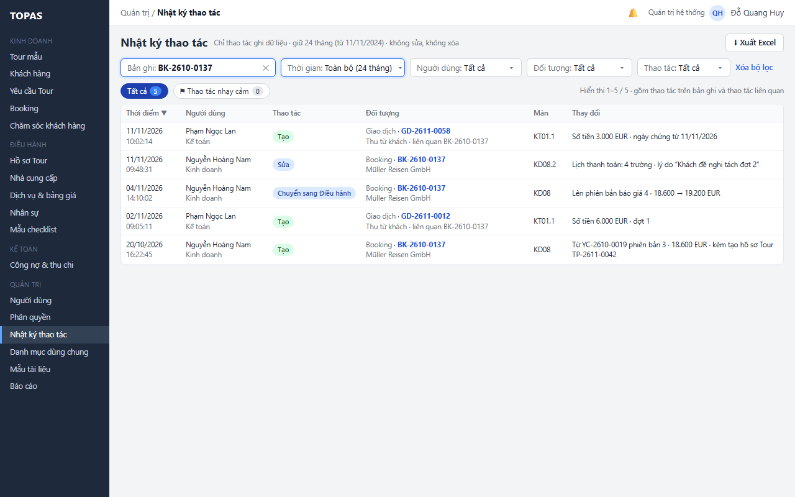
Một dòng nhật ký cho cả lô; bảng trượt liệt kê từng bản ghi với kết quả Đã chuyển hoặc Bỏ qua kèm lý do.
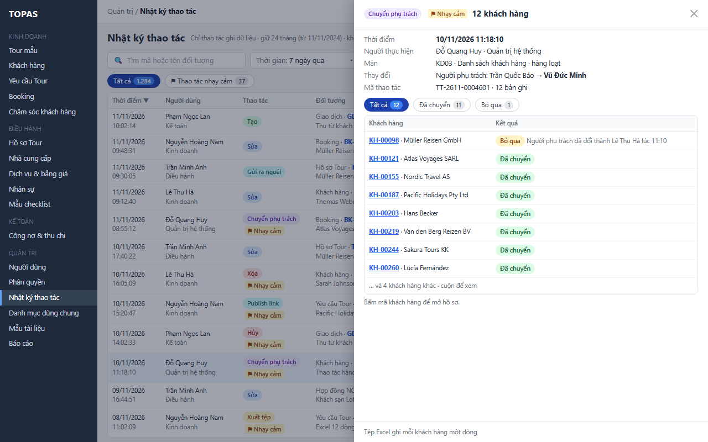
Mở bản ghi đưa tới đúng hồ sơ và tab của màn đã ghi thao tác, theo quyền của người xem. Nội dung đặc tả ở RSD KD08.
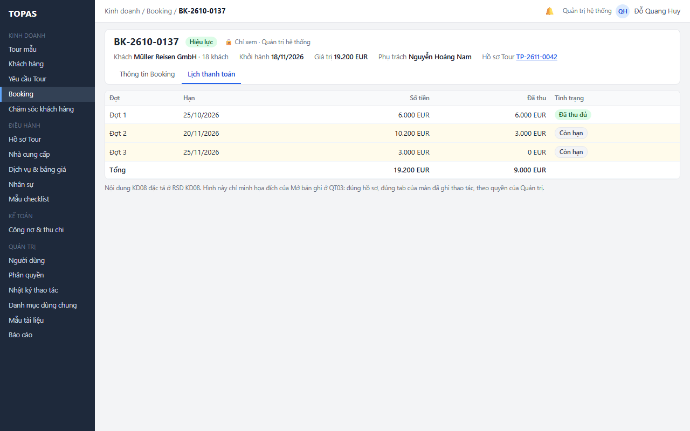
Tệp gồm mọi thao tác khớp bộ lọc, mỗi trường thay đổi một dòng, giá trị nhạy cảm đã che; thông báo ghi số thao tác và tên tệp.
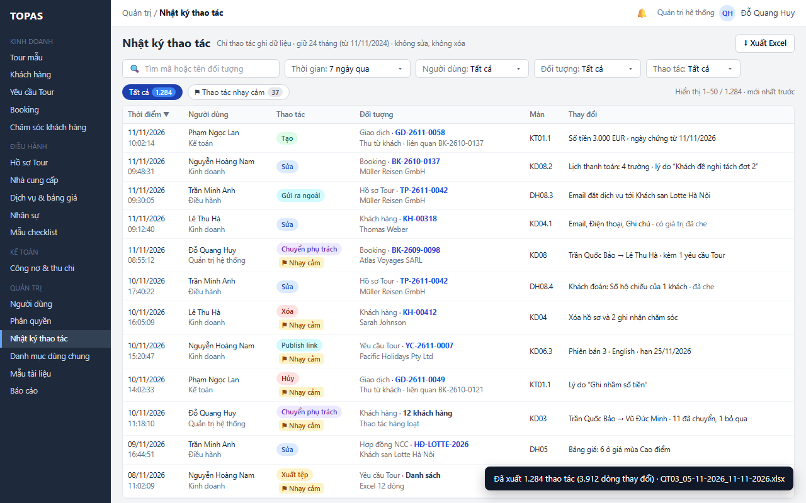
Nút Xuất Excel khóa kèm lý do khi kết quả lọc vượt 20.000 thao tác; gợi ý thu hẹp bộ lọc.
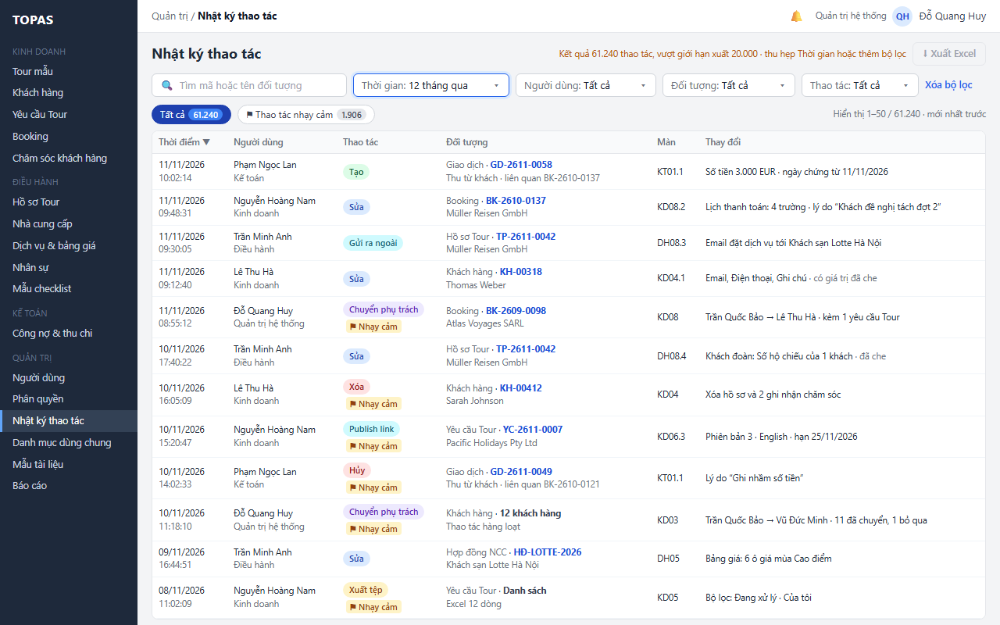
Phân biệt không khớp bộ lọc với lỗi tải; gợi ý mở rộng thời gian hoặc xóa bộ lọc.
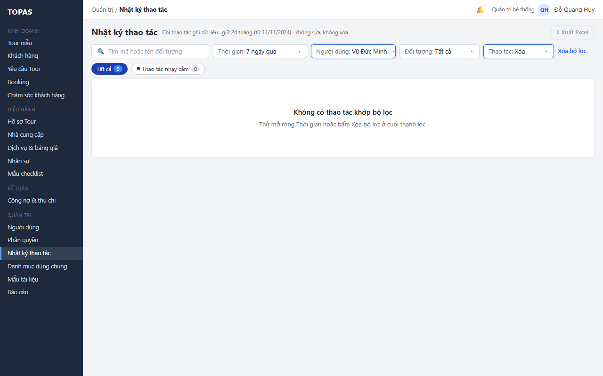
Giữ bộ lọc, số trên chip hiện “–”, cho thử lại.
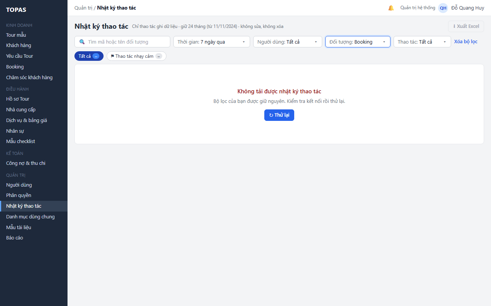
Từ ngày trước mốc 24 tháng: lỗi dưới ô, nút Áp dụng khóa.
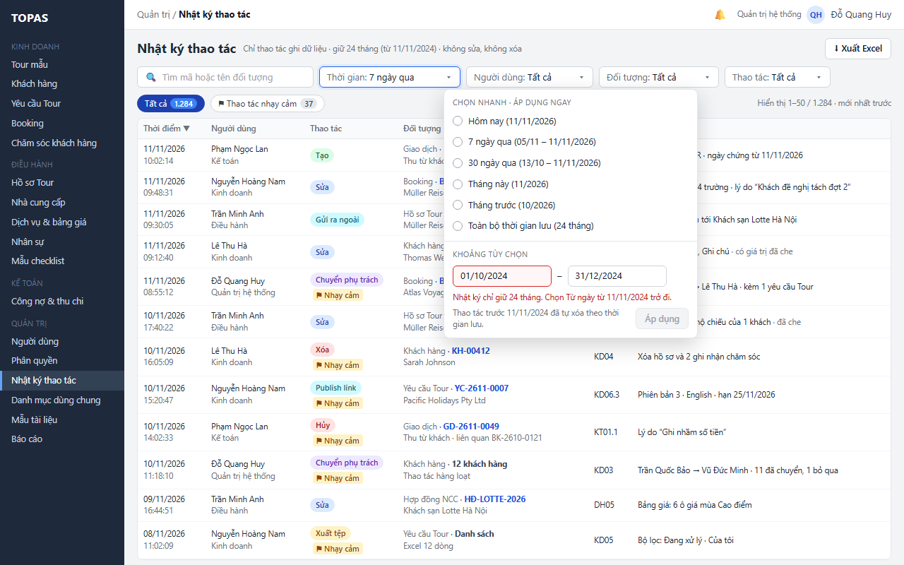
Vai trò khác Quản trị mở đường dẫn QT03: trang không có quyền, chỉ cách xem lịch sử trong hồ sơ.
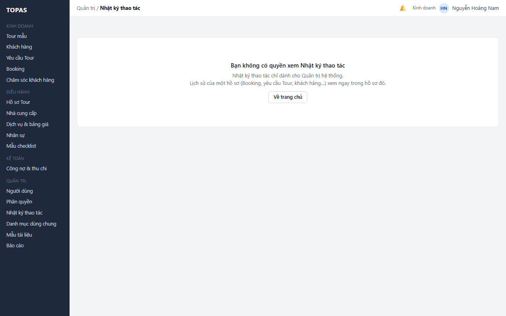